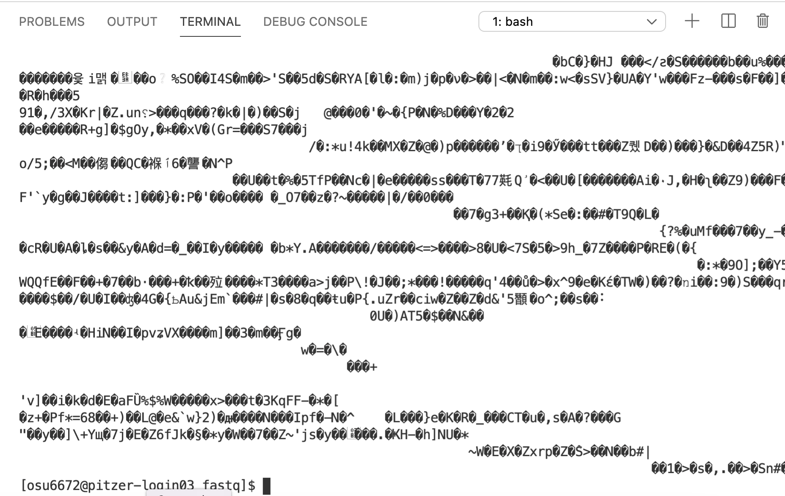

cd <your_dir>/data
ls
ls -lThe Unix Shell - Part II
And an introduction to FASTQ and FASTA files
1 Keyboard shortcuts
| Shortcut | Command |
|---|---|
| Tab | Tab completion! Files, commands, etc. Double Tab to show options when multiple are still available. |
| ⇧ / ⇩ | Cycle through command history |
| CTRL + R | Enter characters to search for in the history (repeat CTRL + R to keep going back, ENTER to put command in prompt) |
| CTRL + C | Abort (kill) current process |
| CTRL + D | Exit the current shell (/ interactive job) (exit) |
| CTRL + Z | Suspend (pause) a process, then use bg to move to background (fg) |
| Ctrl+Shift+C | Copy |
| Ctrl+Shift+V | Paste |
| Ctrl+A | Go to beginning of line |
| Ctrl+E | Go to end of line |
| Ctrl+U | Cut to beginning of line |
| Ctrl+K | Cut to end of line |
| Ctrl+W | Cut previous word |
| Ctrl+Y | Paste previously cut element |
| Alt+. | Paste last argument of last command |
Ctrl+C to kill the currently running command. Try this:
# For each, see what happens, then press Ctrl + C $ sleep 60s $ echo "Missing quote" # Omit closing quote!Ctrl+D or typing
exitwill exit a shell.Press Ctrl+A to move to the beginning of the line,
and addlsto the beginning:ls /fs/project/PAS1855.Press Enter (anywhere on the line!).
Press ⇧ to get the previous command back on the prompt,
and then press Ctrl+U to delete until the beginning of the line.Ctrl+U actually cut the text: “Yank” it back with Ctrl+Y.
Create a directory for yourself using
mkdir:$ mkdir /fs/ess/PAS1855/users/$USERMove into this dir using
cd– after typingcdand a space, press Alt+.:$ cd /fs/ess/PAS1855/users/$USER
2 Wildcards
| Wildcard | Matches |
|---|---|
| * | Any number of any character, including nothing |
| ? | Any single character |
| [] and [^] | One or none (^) of the “character set” within the brackets |
3 Commands for file organization
3.1 mkdir
The mkdir command allows you to create a new directory. Create one for yourself in the current directory … FINISH
mkdir results scriptsmkdir -p
The trouble with spaces
Because spaces are special characters used to separate commands from options and arguments, etc., using them in file names is inconvenient at best:
# You should be in /fs/ess/PAS1855/users/$USER/CSB/unix/sandbox ls cd Papers and reviews # NOPE! cd Papers\ and\ reviews # \ to escape each individual space cd "Papers and reviews" # Quotes to escape special characters
3.2 cp
The data files in the data/fastq directory are FASTQ formatted files from an RNA experiment, and are what we’ll be analyzing as we go through the workshop. We’ll talk more about them soon, but for now, let’s make sure everyone has a copy of the data. We’ll copy the data directory and its contents into the new directory you just made.
The cp command allows you to copy files or directories from one location to another. It has 2 required arguments – what you want to copy, and where you want to copy it to.
Let’s start with what we want to copy. It’s the data directory and all of its contents.
Notice in the diagram above that data is at the same level in the directory structure as our current working directory, participants. This means using data as a relative path won’t work, because the computer looks down the directory structure (it will see the contents of ‘participants’). But there’s a way to deal with that. We can use .. to move us up a level in the directory structure.
cp ...Notice we get a message that it omitted copying the directory data (which is what we wanted to copy). Indeed, the copy didn’t work (you can ls the contents of the target directory to check – it will still be empty). cp works in this simplest form with individual files, but not with directories that have contents inside them. If you want to copy a directory and all of its contents, we need one of those options that modify the behavior of the cp command. In this case, -r, which tells it to copy in a recursive manner.
3.3 Command History
And this is a good spot to introduce the Command History. At the prompt, try hitting the up arrow. A record of all your previous commands is kept, so you can scroll back through them. Use this to get the previous cp command, and then add the -r argument.
cp -r ...ls3.4 mv
4 Working With Text Files
Now let’s start to explore our FASTQ files a bit. In preparation, it’s a good chance to practice a few of the commands we’ve seen so far.
On Your Own: Explore the Files
Set your working directory to the data/fastq directory inside the folder you created for yourself. Then list the contents of that fastq directory. How many files are in there? See if you can get the sizes of each file.
Hint (click here)
Use cd and a relative path (<your_dir>/data/fastq/) to change you working directory.
Once you’re there, use ls to list the contents of the current directory. Recall the option that we used above to give more detailed information about each file, or check out the man page for ls.
Solutions (click here)
4.1 Compressed Files
You might have noticed these files all have a .gz extension, indicating they are ‘gzip-compressed’. This is a common type of compression for large genomic-scale files. The fact that they’re compressed means we can’t just open them up and look inside – we need to uncompress them first. The gunzip command would allow us to do this: it uncompresses the file it’s given and writes the uncompressed version to a new file.
We could do this, but there’s another approach. FASTQ files can get big, and sometimes it helps to be able to keep them compressed as much as possible. It’s a good time for us to explore the pipe.
4.2 | (pipe)
We talked earlier about that commands nearly always print their output is printed to the screen. But you can also redirect the output, and there are three primary ways to redirect it:
With
>, which is followed by the name of a text file the output will be written toWith
>>, which is similar to>but will append the output (that is, it won’t overwrite any existing content like>)With
|(pipe), which takes the output of one command and “pipes” it as input for a subsequent command.
Let’s try to preview the contents of one of the compressed files.
4.3 head
The head command is a great way to preview the contents of a text file. By default, head prints the first 10 lines of a file. Since these are FASTQ files, let’s print 8 lines (a multiple of 4 – it will become clear why shortly). We can use the -n argument to specify the number of lines that will be returned.
head -n 8 x.fastq.gz
This isn’t what we want – we’re seeing the first 8 lines of the compressed files, which is not helpful.
4.4 zcat
The zcat function prints human-readable contents of a gzip-compressed file to the screen. We can try running it on the file, but remember the file is pretty big – there are lots of lines of text in there that will all get printed to the screen. Instead, we can pipe the output of zcat to the head command.
zcat x.fastq.gz | head -n 8

Much better – this is what the raw RNAseq data look like!
Warning
To get the number of lines (= number sequences x 4 – see below) for a gzipped FASTQ file, it’s important to use zcat x.fastq.gz | wc -l instead of wc -l x.fastq.gz, because the compressed file does not have the same number of lines!
4.5 FASTQ Format
If you’re not familiar with it, FASTQ is a very common format for genomic data files. The raw data produced by a high-throughput sequencer will almost certainly be returned to you in this format. These are plain text files, and each sequence that is read by the sequencer is represented by 4 lines:
- A name (header) line
- The sequence itself
- A plus sign (
+) - Quality scores corresponding to each base position in the sequence
4.6 wc
Since each read in a FASTQ file is represented by 4 lines, we should expect the number of lines in each of the FASTQ files to be a multiple of 4. Let’s check one. The wc command stands for word count, but by default, it returns the number of words, lines, and characters in a file. The -l option tells it to return just the number of lines, so we’ll use it since that’s all we’re interested in right now. And remember, we’ll want to do this on the uncompressed data.
zcat x.fastq.gz | wc -l
Note
wc -l filezcat file | wc -lwc -l < file4.7 grep
grep allows you to search through a file for specific patterns of text and returns the matching lines. For example, let’s say we wanted to see what sequences in sample SRR7609467 contain the sequence “ACCGATACG”:
zcat x.fastq.gz | grep "ACCGATACG"

On Your Own: Finding a Sequence
How many sequences in sample SRR7609467 contain the sequence “CCAGTA”?
Hint (click here)
Pipe the results of the grep towc -l. Alternatively, check out the -c option to grep in the man page.
Solutions (click here)
zcat SRR7609467.fastq.gz | grep 'CCAGTA' | wc -lOR
zcat SRR7609467.fastq.gz | grep -c 'CCAGTA'5 Downloading Files from the Web
To download a file to OSC, you can’t just open a web browser and download it directly to there. One way would be to download it to your own computer and then transfer it to OSC.
A more direct approach is to use a command in your OSC Unix shell.
To analyze our RNAseq data, we’ll need two files related to our reference genome — the genome that we want to map our RNAseq reads to, and whose gene annotations will form the basis of the gene counts that we’ll get.
Specifically, we’ll need the nucleotide FASTA file with the genome assembly itself, and a so-called GFF file, a tabular file with the genomic coordinates and other information for genes and other genomic features.
On Your Own: Create a Directory
Create a new (empty) directory named reference that will later store the reference genome for our analyses. Put it in your own directory inside participants. Then make this reference directory your working directory.
Hint (click here)
Use the mkdir command (and cd as necessary).
.. moves you up/back one directory, and these can be combined. For example, ../../../ would move you up/back 3 directories.
Solution (click here)
mkdir ../../reference
cd ../../referenceOR
cd ../../
mkdir reference
cd reference5.1 wget
wget is one command that allows you to download files from the web (curl is another very commonly used one, with much the same functionality).
To download a file to our working directory, all you need is to tell wget about the URL (web address) to the file you want to download.
wget https://ftp.ncbi.nlm.nih.gov/genomes/all/GCF/000/499/845/GCF_000499845.1_PhaVulg1_0/GCF_000499845.1_PhaVulg1_0_genomic.fna.gzOn Your Own: Preview a FASTA file
Try previewing the contents of the reference genome file you just downloaded.
Hint (click here)
Remember, the file is gzip-compressed. Usezcat and pipe the results to head.
Solution (click here)
zcat Pvulg.fa.gz | headOK, now we’ve got our raw data (FASTQ) and our reference genome (FASTA). This is a good start in terms of getting ready to start analyzing the data. One more thing we can do now is try to understand a little bit about the samples themselves. There is a tab-separated text file named meta.tsv in the data/meta directory. et’s take a look at its contents…
5.2 less
less is a command that opens up a text file within your shell. Once you’re finished viewing the file, type q to quit and return to your prompt.
6 A List of Commonly-used Commands
Below is a list of common Unix commands: some truly ubiquitous ones, as well as ones dealing with files and data (but I’m omitting, e.g., the many let’s say “system managent” commands).
They are grouped into some general categories:
- Navigating in the Terminal
pwd: returns (prints) your working directorycd: change working directory
- Viewing Files
cat: print the entire contents of a filehead: print the first lines of a filetail: print the last lines of a fileless: view the contents of a file in a “pager” (pressqto quit/exit!)
- Managing/Organizing Files
ls: list contents of directorymkdir: create a new directoryrm: remove/delete a file or directorycp: copy files/directories to a new locationmv: move/rename files/directories to a new location
- Working With Compressed Files
gzip/gunzip: compress/uncompress a file with gzip compression (.gz)unzip: uncompress a zip (.zip) filezcat: print the contents of a compressed file to the screen
- Assessing Files
md5/shasum: check file integrity via “checksums” (fingerprints) for a filegrep: search a text file for lines containing a pattern of textwc: return number of lines, words, characters in a file
- Editing Files (or other data)
sortuniqcuttrsedawk
- Obtaining/Sharing Files
curl: download a file from onlinewget: download a file from online
- Getting Info About a Command
man: get help (manual) for a command
- Shell Features
- Tab completion
- Command History (up arrow)
- Ctrl+c
- Special Notation
|~...$PATH$HOME
- Wildcards
*?[]^
While it’s not an exhaustive list, getting a grasp on the commands and features above will go a long way in allowing you to work in the Unix shell. We should see nearly all of these in action during our sessions.